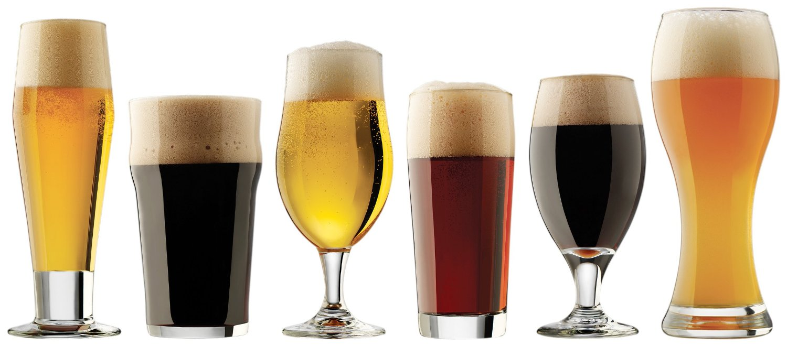

Bienvenue au NYKS Bistro & Pub
Que vous cherchiez un endroit pour dîner entre deux rendez-vous ou une ambiance animée pour un 5 à 7, un souper avant un spectacle dans le quartier ou un verre en fin de soirée, nous sommes là pour vous accueillir!
Côté bar, le NYKS Bistro Pub est l’endroit idéal pour déguster une bière parmi notre vaste choix de 14 fûts d’origines variées ou de plusieurs spécialités en bouteille, pour savourer un vin en bonne compagnie, ou encore pour apprécier notre riche sélection de scotchs, whiskys, rhums et autres spiritueux.
Côté bouffe, bien que réputé pour ses classiques (hamburgers, fish & chips et moules-frites), le NYKS Bistro Pub se distingue par les créations quotidiennes de son chef, qui en font un endroit différent où la variété des plats est rafraîchissante. Poissons frais, viandes sauvages, pâtes maison et tartares à la saveur du marché… Venez les découvrir!
Seul ou accompagné, vous serez charmé par notre environnement convivial, chaleureux et sans prétention !
Contactez-nous pour réserver votre table!
ENTRÉES
| potage du moment | 5 |
| soupe à l’oignon gratinée | 7 |
| salade du jour | 4 |
| brie chaud sur poire au porto noix et fruits secs | 11 |
| tapenade aux olives, tomates séchées et basilic frais | 8 |
| carpaccio de bœuf, huile de truffe, moutarde et copeaux de parmesan | 12 |
| crevettes grillées au basilic et citron | 12 |
| chorizo avec salsa portugaise | 8 |
| bruschetta chaude aux champignons de saison | 9 |
| tartare du moment | 13 |
| calmars frits avec mayonnaise épicée | 12 |
| croquettes de crabe, trio de sauces | 14 |
| gravlax de saumon au tanqueray, croutons au gras de canard et pavot, crème sure à la ciboulette et à l’aneth | 14 |
Salades
| petite | 6 |
| la verdurette grande | 11 |
| salade de chèvre chaud sur épinards et tomates rôties | 15 |
| salade de confit de canard | 18 |
| * extra poulet grillé | 7 |
| * extra crevettes grillées à l’ail | 8 |
| * extra gravlax | 9 |
POUTINES
*sauce au foie gras
| classique | 12 |
| au poulet grillé | 15 |
| au confit de canard | 18 |
| aux saucisses merguez faites maison | 15 |
| à l’effiloché de porc | 15 |
BURGERS
| burger maison au bœuf avec oignons marinés frites et salade verte | 13 |
| burger au poulet grillé avec gruyère et salsa maison, frites et salade verte | 14 |
| burger végé avec gruyère et cornichons frites et salade verte | 13 |
| burger à l’effiloche de porc avec sauce bbq blanche frites et salade verte | 14 |
À LA CARTE
| linguini forestière | 14 |
| penne arrabiata | 13 |
| morue poêlée, beurre aux agrumes, riz et légumes du jour | 17 |
| fish & chips et salade verte | 17 |
| moules marinieres et frites | 13 |
| merguez à l’agneau faites maison, frites et salade verte | 14 |
| saucisses de porc et poireaux faites maison frites et salade verte | 13 |
| tartare du moment frites et salade verte | 18 |
| bavette de bœuf grillée frites et légumes du jour | 19 |
BIÈRES
| VERRE 12oz |
PINTE 20oz |
|
|---|---|---|
IMPORTÉES EN FUT |
||
| carlsberg | 5.25 | 8.25 |
| guinness | 5.25 | 8.25 |
| sapporo | 5.25 | 8.25 |
BIÈRES LOCALES EN FûTEn semaine, de 16h à 19h la pinte de bière locale est à 5,75$ |
||
| belle gueule pilsner | 4.75 | 7.00 |
| belle gueule rousse | 4.75 | 7.00 |
| blanche de chambly | 4.75 | 7.00 |
| coup de grisou | 4.75 | 7.00 |
| mcauslan cream ale | 4.75 | 7.00 |
| st-ambroise noire | 4.75 | 7.00 |
| st-ambroise pale ale | 4.75 | 7.00 |
| la morsure ipa | 5.00 | 8.00 |
| maudite 8% | 16oz | 7.00 |
| okanagan cloudy amber ale | 5.00 | 8.00 |
CIDRE EN FûT |
||
| michel jodoin | 5.00 | 8.00 |
| black velvet | 5.50 | 8.50 |
| white velet | 5.50 | 8.50 |
| red velvet | 5.50 | 8.50 |
| snake bite | 5.50 | 8.50 |
IMPORTEES EN BOUTEILLE |
||
| bitburger drive 0,0% | 5.00 | |
| corona | 7.50 | |
| heineken | 7.50 | |
BRASSEURS LOCAUX EN BOUTEILLE |
||
| sleeman clear | 5.00 | |
| sleeman silver creek | 5.00 | |
| st-ambroise à l’abricot | 5.50 | |
| st-ambroise à la citrouille | 6.75 | |
| st-ambroise ipa | 5.50 | |
| fin du monde | 6.75 | |
| trou du diable le sang d’encre | 6.75 | |
| trou du diable la tracteur | 6.75 | |
| trou du diable mactavish | 6.75 | |
| mout de pomme rosé 0,0% | 5.00 |
VINS
ROUGES
| saint-chinian 2012, cazal-viel, france | 6 / 31 |
| cabernet-sauvignon 2012, trapiche fut de chênes, argentine | 7 / 33 |
| *rioja 2013, cuna de reyes, espagne | 7 / 36 |
| sangiovese 2012, pater, toscane, italie | 8 / 36 |
| *syrah-grenache 2012, les deux copains, languedoc | 8 / 37 |
| ménage à trois 2012, folie à deux, zinfandel, merlot et cabernet, californie | 38 |
| pinot noir 2012, blackstone, 9 / californie | 40 |
| zinfandel 2012, ravenswood, vintners blend, californie | 42 |
| bordeaux 2011,château bujan, côtes de bourg, france | 46 |
| pinot noir 2012, spy valley, marlborough, nouvelle-zélande | 50 |
| rioja 2005, fautino v reserva, espagne | 55 |
| shiraz-vionier 2010, the laughing magpie, mclaren vale, australie | 58 |
| sangiovese 2011, lucente, toscane, italie | 69 |
| le grand vin 2009, osoyoos larose, okanagan valley, canada | 75 |
| pinot noir 2012, la crema, russian river valley, californie | 82 |
| bordeaux 2005, ségla margaux 3 france | 00 |
BLANCS
| vina sol 2013, torres, catalunya, espagne | 6 / 31 |
| chardonnay 2013, rapitala, sicile, italie | 7 / 32 |
| pinot griggio 2013, folonari, delle venezie, italie | 7 / 33 |
| sauvignon blanc 2014, monkey bay, marlborough, nouvelle-zélande | 8 / 35 |
| pinot blanc 2012, pfaff, alsace, france | 9 / 38 |
| *riesling 2012, inniskillin, niagara estate, canada | 39 |
| chablis 2013, château de maligny france | 48 |
| sancerre 2012, la moussiére, france | 58 |
ROSÉS
| white zinfandel 2013, ernest & julio gallo, californie | 6 / 28 |
| carrelot des amants 2013, côte du brulhois | 7 / 32 |
BULLES
| château moncontour 2012, brut vouvray | 45 |
| nicolas feuillate, brut champagne, brut réserve | 90 |
*taxes incluses